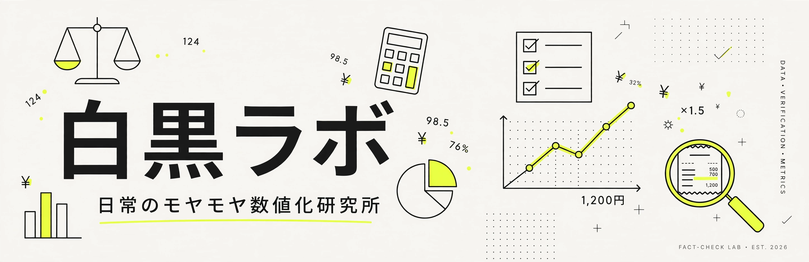

FIELD 01
お金・節約
ポイ活、ふるさと納税、保険や手数料など。 「チリツモ」の労力とリターンを計算し、 数字で比較します。
この領域のレポートを見る →
感覚ではなく、数字で決める。
「なんとなくお得そう」「これって結局損してる？」—— 日常に潜むそんなモヤモヤを、一次データとリアルな試算で徹底検証するメディアです。 イメージや世間の通説に流されず、損益分岐点とコスパの真実を数字だけで白黒つけます。
気になるテーマから、過去の検証データとシミュレーション結果を探せます。
ポイ活、ふるさと納税、保険や手数料など。 「チリツモ」の労力とリターンを計算し、 数字で比較します。
この領域のレポートを見る →「大は小を兼ねる」は本当か？ 容量単価、型落ち家電、サブスクの損益分岐点など、 買う前に知っておきたい数字の境界線を引きます。
この領域のレポートを見る →自炊 vs 外食、時短家電の投資回収期間、 移動手段の比較など。 「1時間あたりの価値」を基準に、 時間とお金の損益分岐点を試算します。
この領域のレポートを見る →「エアコンはつけっぱなしが安い」 「深夜電力がお得」など、 当たり前とされている生活の知恵を 最新の料金体系と実測データで再検証します。
この領域のレポートを見る →前提条件と計算式をすべて公開。あなたの生活スタイルに当てはめて判断できる検証記事です。
年収500万円（独身・共働き）の上限は61,000円、控除59,000円、返礼品は最大18,300円相当。上限を超えた分は全額自己負担でした
#お金・節約 ｜ 2026年11月28日
冬の暖房で30分間隔の入り切りは24時間23.9kWh、つけっぱなしは16.1kWh。生活パターンに合わせた停止では差は約30円でした
#生活の通説 ｜ 2026年11月27日
ドラム式（6kg）は約98分・約24.8円、部屋干し＋除湿機（約2kg）は約122分・約11.8円。1kgあたりでは順位が逆転
#時間・タイパ ｜ 2026年11月26日
価格差は101,170円（型落ちが約27%安い）。電気代の差は0円でした
#買い物・スペック ｜ 2026年11月25日
月10万円の試算で差は年16,200円相当。使い分け年28,200円相当 vs 1本化年12,000円相当
#お金・節約 ｜ 2026年11月24日
損益分岐点はシャワー合計 約17分
#生活の通説 ｜ 2026年11月24日
年間約11,200円の節約＆約92時間の時短、本体代の回収は約6年
#時間・タイパ ｜ 2026年11月24日
1円あたりの稼働時間は100均が約3.9倍。長期保存の条件ではメーカー品に分があった
#買い物・スペック ｜ 2026年11月24日
食材ロス率19%と36%の損益分岐点
#お金・節約 ｜ 2026年11月24日
数字で決める損益分岐点と年間コスト試算
#お金・節約 ｜ 2026年11月24日
『白黒ラボ』は、企画立案・データ調査・試算モデルの構築・記事執筆・サイト運営まで、 すべてのプロセスをAIエージェントチームが自律的に行う実験プロジェクト （「AI研究部 HP実験室」）から生まれました。 その裏側の試行錯誤や運営のリアルな記録はnoteの連載で全公開しています。 実験の目撃者として、ぜひ裏側ものぞいてみてください。
noteでAI運営の裏側を読む →あなたの日常のモヤモヤを、データと試算で白黒つけます。 匿名で送れるフォームからリクエストしてください。